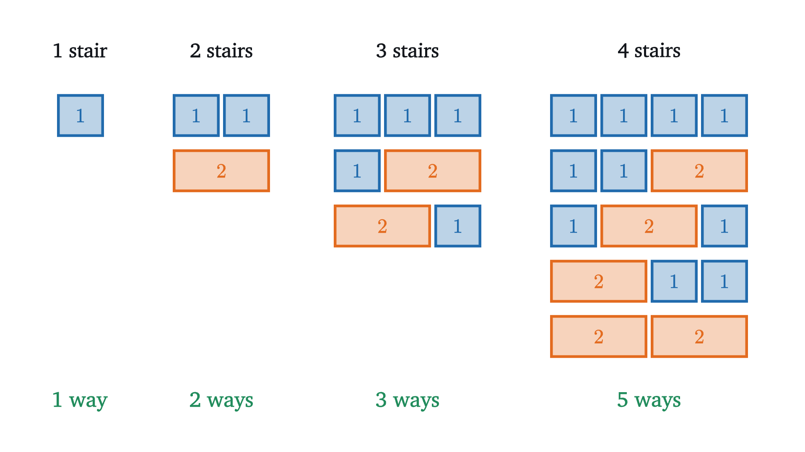
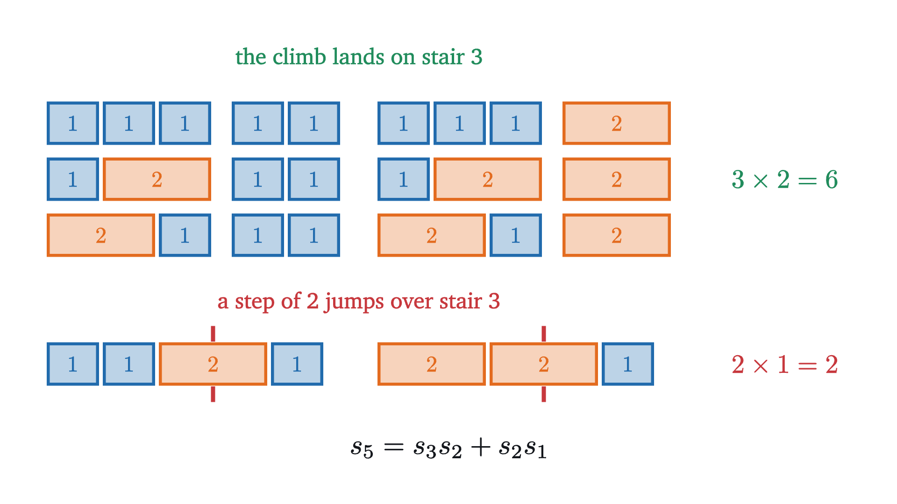
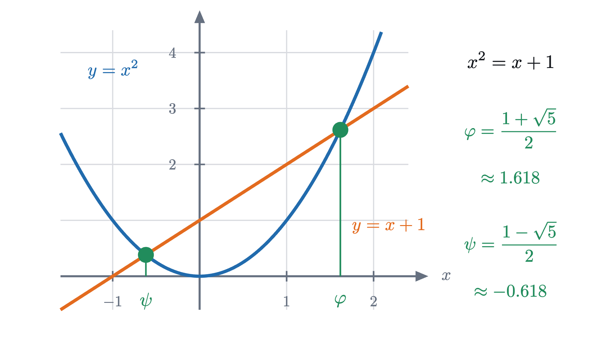
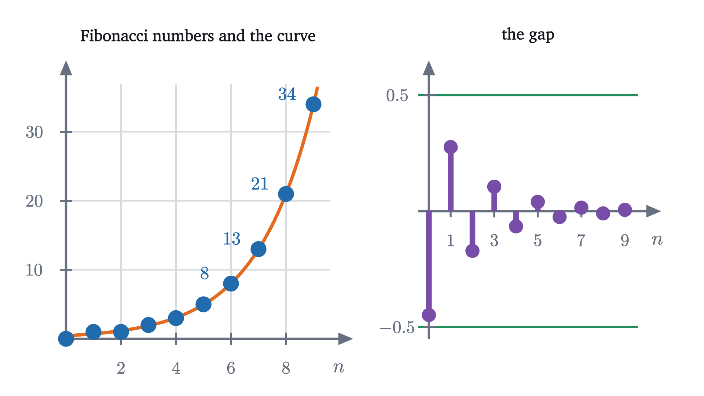

Fibonacci numbers and thinking recursively
Count the ways to climb a staircase and the Fibonacci numbers appear. Their rule, two identities, Binet's formula and the golden ratio, all proved.
A staircase has 10 stairs. You climb it by taking either one stair or two stairs with each step, mixing them however you like. In how many different ways can you reach the top? Write down a guess before reading on.
A common guess is a number near 20. The answer is 89, and listing 89 climbs is not how anyone finds it. The way to find it is to notice that the problem contains smaller copies of itself. That habit of mind is called recursive thinking, and the numbers this staircase produces are the best-known example of it.
Small staircases first
With 1 stair there is one way: a single step. With 2 stairs there are two ways, two steps of 1 or one step of 2. I will record a climb by the sizes of its steps, so the climbs of 3 stairs are $1 + 1 + 1$, $1 + 2$ and $2 + 1$. The order matters: $1 + 2$ and $2 + 1$ are different climbs.

So the counts begin 1, 2, 3, 5.
Pause and try
Predict the number of climbs of 5 stairs from the pattern 1, 2, 3, 5. Then list them all and see whether you were right.
Show answerHide answer
A tempting prediction is 7, because 2, 3, 5 look like the start of the primes. The list has 8 entries: $1+1+1+1+1$, four climbs with one step of 2 (it can be the first, second, third or fourth step), and three climbs with two steps of 2, namely $1+2+2$, $2+1+2$, $2+2+1$. The animation above finds the same 8.
A pattern read off four numbers is a guess. To know what comes next we need a reason, and the reason will also tell us how to compute the count for 10 stairs without a list.
Sort the climbs by their last step
Write $s_n$ for the number of climbs of $n$ stairs, so $s_1 = 1$, $s_2 = 2$, $s_3 = 3$, $s_4 = 5$, $s_5 = 8$. Take the 8 climbs of 5 stairs and ask of each one how it ended.
Nothing in the figure depended on the number 5. A climb of $n$ stairs ends with a step of 1 or a step of 2. If it ends with a step of 1, what came before is a climb of $n - 1$ stairs, and every climb of $n - 1$ stairs can be finished this way. If it ends with a step of 2, what came before is a climb of $n - 2$ stairs. The two kinds do not overlap and together they are all the climbs, so
A rule that gives each term of a sequence from earlier terms is called a recurrence. This one needs two starting values, $s_1 = 1$ and $s_2 = 2$, because it reaches back two terms.
Pause and try
Use the recurrence to find $s_{10}$, the answer to the opening question.
Show answerHide answer
Each term is the sum of the two before it: $1, 2, 3, 5, 8, 13, 21, 34, 55, 89$. So $s_{10} = 89$. Eight additions, starting from $s_1 = 1$ and $s_2 = 2$, replaced a list of 89 climbs.
The Fibonacci numbers
The sequence has a standard form that starts two terms earlier.
The first few are $0, 1, 1, 2, 3, 5, 8, 13, 21, 34, 55, 89, 144$. They are named after Leonardo of Pisa, called Fibonacci, who used them in 1202 to count rabbits, and they were known to Indian scholars of poetic meter centuries before that, for exactly our reason: a line of verse made of short and long syllables is a staircase climbed in steps of 1 and 2.
Two base cases are needed because the step for $n = 3$ uses both $n = 1$ and $n = 2$. If induction is new to you, the linked lesson explains why a step that leans on two earlier cases needs two cases to start from.
An identity from cutting a climb in two
Recursive thinking is not limited to the last step. Here is a different way to split a climb, and it produces a formula that would be painful to find by algebra. Take the climbs of 5 stairs again and watch stair 3.

Check it on a case we know: $s_{10} = s_5 s_5 + s_4 s_4 = 64 + 25 = 89$. No algebra was done in this proof. We counted one set in two ways, and that is often the shortest route to an identity between counting numbers.
An identity from stacking squares
A second identity comes from geometry. Add up the squares of the Fibonacci numbers: $1^2 = 1$, then $1 + 1 = 2$, then $1 + 1 + 4 = 6$, then $15$, then $40$.
Pause and try
The sums of squares are $1, 2, 6, 15, 40, 104$. Factor each one and guess the formula for $F_1^2 + F_2^2 + \dots + F_n^2$.
Show answerHide answer
$1 = 1 \cdot 1$, $2 = 1 \cdot 2$, $6 = 2 \cdot 3$, $15 = 3 \cdot 5$, $40 = 5 \cdot 8$, $104 = 8 \cdot 13$. Each is a product of two neighboring Fibonacci numbers, so the guess is $F_n F_{n+1}$.
The induction step is the animation in symbols. A rectangle $F_k$ by $F_{k+1}$ has a long side of length $F_{k+1}$, a square of that side fits against it, and the new rectangle is $F_{k+1}$ by $F_k + F_{k+1}$.
The ratio of neighbors
The rectangles in that animation all look alike. Their proportions are $1 \times 2$, $2 \times 3$, $3 \times 5$, $5 \times 8$, $8 \times 13$, and after the first few the shape hardly changes. So divide each Fibonacci number by the one before it.
The ratios are $1,\ 2,\ 1.5,\ 1.667,\ 1.6,\ 1.625,\ 1.6154,\ 1.6190,\ 1.6176,\ 1.6182$. They alternate, too high then too low, and the swings shrink fast. What number are they closing in on?
There is a quick argument. Divide the recurrence $F_{n+1} = F_n + F_{n-1}$ by $F_n$:
If the ratios settle at some number $x$, then the left side is close to $x$ and the fraction on the right is close to $1/x$, so $x = 1 + 1/x$, that is, $x^2 = x + 1$. The quadratic formula, which comes from completing the square, gives $x = \frac{1 \pm \sqrt 5}{2}$, and the ratios are positive, so $x$ would be $\frac{1 + \sqrt 5}{2} = 1.6180\ldots$
You might object that the argument began with “if”. It shows that there is only one possible limit, and it does not show that the ratios have a limit at all. The objection is right, and a sequence can easily obey a tidy equation in the limit without having one. To close the gap we will find an exact formula for $F_n$.
A formula for the $n$th Fibonacci number
The ratios suggest that for large $n$ each Fibonacci number is about 1.618 times the one before, which is how a geometric sequence $1, x, x^2, x^3, \dots$ behaves. So ask a cleaner question first.
Pause and try
For which numbers $x$ does the geometric sequence $x^n$ obey the Fibonacci rule, $x^n = x^{n-1} + x^{n-2}$ for all $n \ge 2$?
Show answerHide answer
Divide by $x^{n-2}$ (the case $x = 0$ gives nothing useful): the rule holds exactly when $x^2 = x + 1$. That is the same equation as before, and it has two solutions, $\frac{1 + \sqrt5}{2} \approx 1.618$ and $\frac{1 - \sqrt5}{2} \approx -0.618$.

Call the two solutions $\varphi = \frac{1 + \sqrt5}{2}$, the golden ratio, and $\psi = \frac{1 - \sqrt5}{2}$. Three facts about them will be used: $\varphi + \psi = 1$, $\varphi - \psi = \sqrt 5$, and each satisfies $x^2 = x + 1$.
Neither $\varphi^n$ nor $\psi^n$ is the Fibonacci sequence, since they start $1, \varphi$ and $1, \psi$ instead of $0, 1$. But the Fibonacci rule only adds, so if two sequences obey it, then so does any combination $a\varphi^n + b\psi^n$ with fixed numbers $a$ and $b$. We have two numbers to choose and two starting values to match. At $n = 0$ we need $a + b = 0$, and at $n = 1$ we need $a\varphi + b\psi = 1$. The first gives $b = -a$, and then the second reads $a(\varphi - \psi) = 1$, so $a = 1/\sqrt5$.
It is strange to see $\sqrt 5$ in a formula for whole numbers. The irrational parts cancel every time, and the picture below shows how little the second term contributes.

Since $|\psi| < 1$, the term $\psi^n / \sqrt 5$ has size at most $\frac{1}{\sqrt5} < \frac12$ for every $n \ge 0$. So $F_n$ is the whole number nearest to $\varphi^n / \sqrt 5$, and for large $n$ the Fibonacci numbers are, to a tiny error, a geometric sequence with ratio $\varphi$.
Why the ratio converges to the golden ratio
Now the “if” can be removed.
The exact equation explains everything in the ratio plot. Because $\psi$ is negative, $\psi^n$ changes sign at every step, so the ratios land alternately above and below $\varphi$. And the error at step $n$ is $|\psi|^n / F_n$, where the top shrinks and the bottom grows: at $n = 10$ it is already $0.0081 / 55 \approx 0.00015$.
The theorem has a hypothesis hiding in it: the starting values. The sequence $1, \psi, \psi^2, \psi^3, \dots$ obeys the same recurrence, and the ratio of its neighbors is $\psi$ at every step, never near $\varphi$. Problem 8 finds exactly which starting values lead to $\varphi$.
Worked examples
Common mistakes
Stepping back
The staircase looked like a problem about listing, and the list was hopeless by 10 stairs. What worked was asking how a climb ends, because the answer exposed two smaller staircases inside the big one. The same question, asked of tilings, bit strings or rectangles, turns many counting problems into a recurrence. Once there is a recurrence, small cases supply the starting values, induction proves what the pattern suggests, and geometric sequences that satisfy the rule lead to an exact formula.
The two numbers $\varphi$ and $\psi$ return in linear algebra, where the step from the pair $(F_{n-1}, F_n)$ to the pair $(F_n, F_{n+1})$ is a matrix and $\varphi$, $\psi$ are its eigenvalues.
Check yourself
A sequence obeys $G_n = G_{n-1} + G_{n-2}$ for $n \ge 3$, with $G_1 = 1$ and $G_2 = 3$. What is $G_5$?
Problems
Problems 1 to 3 repeat the lesson’s moves. Problems 4 to 6 ask you to set up or prove something new. Problems 7 and 8 go further.
Problem 1
Compute $F_{15}$. In how many ways can a staircase of 14 stairs be climbed with steps of 1 and 2?
Show solutionHide solution
Continue the list: $F_{12} = 144$, $F_{13} = 233$, $F_{14} = 377$, $F_{15} = 610$. By the theorem $s_{14} = F_{15} = 610$.
Problem 2
Now each step may go up 1, 2 or 3 stairs. Find a recurrence for the number $t_n$ of climbs of $n$ stairs, and compute $t_7$.
Show solutionHide solution
Sort the climbs by the last step, which is 1, 2 or 3. Removing it leaves a climb of $n - 1$, $n - 2$ or $n - 3$ stairs, and each such climb arises exactly once, so $t_n = t_{n-1} + t_{n-2} + t_{n-3}$ for $n \ge 4$. Three starting values are needed: $t_1 = 1$, $t_2 = 2$ (as before) and $t_3 = 4$ (the climbs $1+1+1$, $1+2$, $2+1$, $3$). Then $t_4 = 7$, $t_5 = 13$, $t_6 = 24$, $t_7 = 44$.
Problem 3
Prove by induction that $F_1 + F_2 + \dots + F_n = F_{n+2} - 1$ for every $n \ge 1$.
Show solutionHide solution
Base case. $F_1 = 1$ and $F_3 - 1 = 2 - 1 = 1$. Step. Assume $F_1 + \dots + F_k = F_{k+2} - 1$. Adding $F_{k+1}$ to both sides gives $F_1 + \dots + F_{k+1} = F_{k+2} + F_{k+1} - 1 = F_{k+3} - 1$, by the recurrence. That is the statement for $k + 1$. Check: $1 + 1 + 2 + 3 + 5 = 12 = 13 - 1$.
Problem 4
A $2 \times n$ board is to be covered by dominoes, each $1 \times 2$ or $2 \times 1$, with no overlaps. Show that the number of ways is $F_{n+1}$.
Show solutionHide solution
Let $d_n$ be the number of tilings and look at the right-hand end of the board. The last column is covered either by one vertical domino, or by the ends of two horizontal dominoes, which then cover the last two columns completely. (One horizontal domino in the top row of the last column forces another below it, because the cell beneath cannot be covered by a vertical domino.) Removing the vertical domino leaves a tiling of a $2 \times (n-1)$ board, and removing the horizontal pair leaves a tiling of a $2 \times (n-2)$ board, and each smaller tiling arises exactly once. So $d_n = d_{n-1} + d_{n-2}$ for $n \ge 3$. Also $d_1 = 1$ and $d_2 = 2$ (two vertical or two horizontal). These are the recurrence and starting values of $s_n$, so $d_n = s_n = F_{n+1}$.
Problem 5
Use the cutting identity to show that $F_{2n} = F_n\,(F_{n+1} + F_{n-1})$ for $n \ge 1$. Deduce that $F_n$ divides $F_{2n}$, and compute $F_{20}$ from $F_9 = 34$, $F_{10} = 55$, $F_{11} = 89$.
Show solutionHide solution
In $F_{m+n+1} = F_{m+1}F_{n+1} + F_m F_n$ replace $m$ by $n - 1$ (allowed for $n \ge 2$, since then $n - 1 \ge 1$): $F_{2n} = F_n F_{n+1} + F_{n-1} F_n = F_n\,(F_{n+1} + F_{n-1})$. For $n = 1$ check directly: $F_2 = 1 = F_1 (F_2 + F_0)$. The second factor is a whole number, so $F_n$ divides $F_{2n}$. With $n = 10$: $F_{20} = 55 \times (89 + 34) = 55 \times 123 = 6765$.
Problem 6
The Lucas numbers obey the Fibonacci recurrence with $L_0 = 2$ and $L_1 = 1$. List them up to $L_6$, and use the method that led to Binet’s formula to find a formula for $L_n$. Check it at $n = 2$.
Show solutionHide solution
$2, 1, 3, 4, 7, 11, 18$. Try $L_n = a\varphi^n + b\psi^n$, which obeys the recurrence for any $a$ and $b$. Matching $n = 0$ gives $a + b = 2$, and matching $n = 1$ gives $a\varphi + b\psi = 1$. Since $\varphi + \psi = 1$, the choice $a = b = 1$ satisfies both. So $L_n = \varphi^n + \psi^n$: both sides obey the recurrence and agree at $n = 0$ and $n = 1$, hence agree for all $n$ by strong induction, exactly as in the proof of Binet’s formula. Check at $n = 2$: $\varphi^2 + \psi^2 = (\varphi + 1) + (\psi + 1) = 1 + 2 = 3 = L_2$.
Problem 7
Prove Cassini’s identity: $F_{n+1}F_{n-1} - F_n^2 = (-1)^n$ for every $n \ge 1$. Then explain the old puzzle in which an $8 \times 8$ square is cut into four pieces that seem to reassemble into a $5 \times 13$ rectangle.
Show solutionHide solution
Base case. For $n = 1$: $F_2 F_0 - F_1^2 = 0 - 1 = -1 = (-1)^1$. Step. Assume $F_{k+1}F_{k-1} - F_k^2 = (-1)^k$. Then
For the puzzle take $n = 6$: $F_7 F_5 - F_6^2 = 13 \times 5 - 8^2 = 65 - 64 = 1$. The square has area 64 and the rectangle 65, so the pieces cannot fill the rectangle. They leave a gap of total area 1, and it is hard to see because it is a very thin sliver stretched along the rectangle’s diagonal.
Problem 8
A sequence obeys $G_n = G_{n-1} + G_{n-2}$ for $n \ge 2$, with starting values $G_0$ and $G_1$ that are not both zero. (a) Show that $G_n = A\varphi^n + B\psi^n$ where $A = \dfrac{G_1 - \psi G_0}{\sqrt 5}$ and $B = \dfrac{\varphi G_0 - G_1}{\sqrt5}$. (b) Show that $G_{n+1}/G_n \to \varphi$ if $A \ne 0$, and describe what happens if $A = 0$. (c) Why does every such sequence of whole numbers have ratios converging to $\varphi$?
Show solutionHide solution
(a) The sequence $A\varphi^n + B\psi^n$ obeys the recurrence, so by strong induction it is enough to check $n = 0$ and $n = 1$. At $n = 0$: $A + B = \frac{G_1 - \psi G_0 + \varphi G_0 - G_1}{\sqrt5} = \frac{(\varphi - \psi)G_0}{\sqrt5} = G_0$. At $n = 1$: $A\varphi + B\psi = \frac{\varphi G_1 - \varphi\psi G_0 + \varphi\psi G_0 - \psi G_1}{\sqrt 5} = \frac{(\varphi - \psi)G_1}{\sqrt5} = G_1$.
(b) Write $r = \psi/\varphi$, so $|r| \approx 0.382 < 1$. If $A \ne 0$, divide top and bottom by $\varphi^n$:
As $n$ grows, $r^n \to 0$, so the top approaches $A\varphi$ and the bottom approaches $A \ne 0$, and the ratio approaches $\varphi$. If $A = 0$ then $B \ne 0$ and $G_n = B\psi^n$, whose ratio is $\psi$ for every $n$.
(c) $A = 0$ means $G_1 = \psi G_0$. If $G_0 = 0$ this forces $G_1 = 0$, which is excluded. If $G_0 \ne 0$ it says $\psi = G_1/G_0$, a ratio of whole numbers, but $\psi = \frac{1 - \sqrt5}{2}$ is irrational. So $A \ne 0$ for whole-number starting values, and part (b) applies.